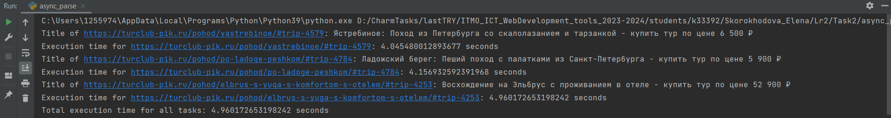

Async подход к парсингу
В отличие от многопоточности и многопроцессорности, где используются разные потоки или процессы, асинхронное программирование в Python позволяет создавать корутины и выполнять их параллельно в рамках одного потока, что может повысить эффективность при работе с сетевыми операциями.
Определение асинхронной функции main: В этой функции определены URL-адреса для сбора информации. Создаются задачи (task) для каждого URL, а затем они объединяются с помощью a syncio.gather, чтобы выполнить их параллельно.
import asyncio
import aiohttp
from bs4 import BeautifulSoup
from sqlalchemy import create_engine, Column, Integer, String, DateTime
from sqlalchemy.orm import sessionmaker
from db import Trip, SessionLocal
import time
from datetime import datetime
async def parse_and_save(url):
start_time = time.time()
async with aiohttp.ClientSession() as session:
async with session.get(url) as response:
html = await response.text()
soup = BeautifulSoup(html, "html.parser")
title = soup.title.string
departure_location_element = soup.find("div", class_="tags").find("a", class_="tag has-icon-location")
if departure_location_element:
departure_location = departure_location_element.text.strip()
else:
departure_location = "Unknown"
date_option = soup.select_one("option[selected='selected']")
if date_option:
date_text = date_option.text.strip()
if " — " in date_text and " " in date_text:
start_day, end_month_year = date_text.split(" — ", maxsplit=1)
end_day, month_year = end_month_year.split(" ", maxsplit=1)
month_name, year = month_year.rsplit(maxsplit=1)
months = {
"января": 1, "февраля": 2, "марта": 3, "апреля": 4, "мая": 5, "июня": 6,
"июля": 7, "августа": 8, "сентября": 9, "октября": 10, "ноября": 11, "декабря": 12
}
month = months[month_name]
start_date_str = f"{start_day} — {month} {year}"
end_date_str = f"{end_day} {month} {year}"
start_date = datetime.strptime(start_date_str, "%d — %m %Y")
end_date = datetime.strptime(end_date_str, "%d %m %Y")
else:
print("Date format not as expected.")
else:
start_date = "Unknown"
end_date = "Unknown"
duration_element = soup.select_one("p.heading:-soup-contains('Длительность') + p.title i.icon-duration")
if duration_element:
duration_text = duration_element.find_next_sibling(text=True).strip()
duration = int(duration_text)
else:
duration = "Unknown"
details_block = soup.find("div", class_="block mt-6")
if details_block:
description_element = details_block.find("p", class_="title", text="Давайте с нами!")
if description_element:
details = description_element.find_next_sibling("div").text.strip()
else:
details = None
else:
details = None
print(f"Title of {url}: {title}")
db = SessionLocal()
db.add(Trip(title=title, departure_location=departure_location,
start_date=start_date, end_date=end_date,
duration=duration, details=details))
db.commit()
db.close()
end_time = time.time()
execution_time = end_time - start_time
print(f"Execution time for {url}: {execution_time} seconds")
async def main():
urls = ["https://turclub-pik.ru/pohod/elbrus-s-yuga-s-komfortom-s-otelem/#trip-4253",
"https://turclub-pik.ru/pohod/po-ladoge-peshkom/#trip-4784",
"https://turclub-pik.ru/pohod/yastrebinoe/#trip-4579"]
tasks = []
for url in urls:
task = parse_and_save(url)
tasks.append(task)
await asyncio.gather(*tasks)
if __name__ == "__main__":
start_time = time.time()
asyncio.run(main())
end_time = time.time()
total_execution_time = end_time - start_time
print(f"Total execution time for all tasks: {total_execution_time} seconds")
